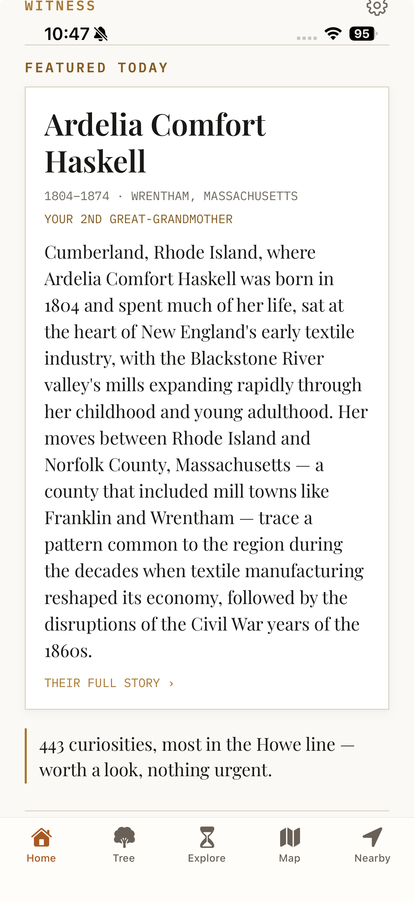

The daily front page: one featured life, today’s anniversaries, and quiet pointers into everything else. Nothing here demands action — it’s a paper to glance at with coffee.
How you get here: the Home tab — the app opens here. The gear in the top corner opens You (account, trees, and preferences).

1 2 3 4 5 6Below the fold, the feed continues in small titled sections: ON THIS DAY (a family anniversary falling today — or, failing that, a historical event with how many of your people were alive for it) with the THIS WEEK IN YOUR FAMILY › link beneath; YOUR TREE, a one-line stat strip (people · families · generations) that opens the Tree tab; PICK UP WHERE YOU LEFT OFF, which remembers the last person or screen you were reading; and the EXPLORE shelf — a horizontal row of event cards, each with its year and a live “N ALIVE” count, ending in THE LIBRARY ›.